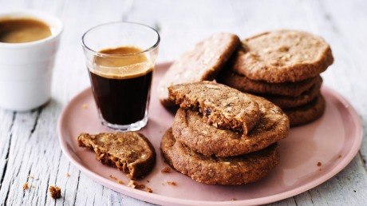

Coffee Biscuits

Description
A buttery biscuit with a subtle coffee flavor.
Ingredients
- Butter, 227g
- Whole roasted coffee beans, 50g
- Sugar, 200g
- Eggs, 2
- Vanilla extract, 5ml
- All-purpose flour, 525g
- Cornstarch, 100g
- Kosher salt, 6g
Steps
- Put the butter in a small pot set over low heat and let it melt completely.
- Add the coffee beans and let them soak in the butter for 1 hour over the lowest heat setting. More time will yield a stronger coffee flavour.
- Strain the coffee beans from the butter and discard them.
- Put the coffee butter in the refrigerator to cool and solidify.Put the coffee butter in the refrigerator to cool and solidify.
- In a large bowl, cream together the sugar and the coffee butter until they are light and fluffy.
- Add the eggs and vanilla and mix until they are fully combined.
- Add the flour, cornstarch and salt and mix until a crumbly dough forms.
- Separate the dough into 2 to 4 balls, depending on the size of your work surface.
- Place a ball of dough between two pieces of parchment paper and roll it out to ¼” or 6.5 mm thick.
- Use a cookie cutter to cut out shapes and transfer them to a parchment paper lined baking sheet.
- Chill the cut dough in the freezer for 10 minutes.
- Preheat the oven to 325°F/163°C.
- Bake the cookies for 6 minutes, rotate and switch the pan positions, then bake for another 6 minutes.
- Let the cookies cool completely before decorating.